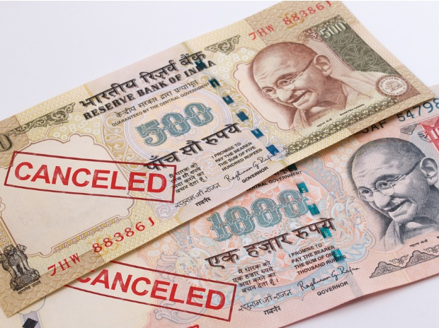

|
Rumours became rife. Some tried to invest their dying currency in gold. Some contacted their near and dear ones in this miserable hour. People could get only Rs 4000/ of old denomination exchanged with the new one. Big queues before the banks and ATMs became the order of the day. Instead of getting shorter, these queues were getting longer with every passing day. The last date for the whole process was 30th of December. The persons could deposit the old cash worth Rs 2.5 lac till the said date. The main objective of this move was to curb the black money, corruption and fake money menace. All the people but those who were indulged in malpractices welcomed the move. The whole opposition shook hand against this move under one pretence or the other. They called this decision a draconian law and wanted the govt to roll back it. Tirades were made to target the decision. Govt also carried out counter attacks. Let us Explore whether Demonetisation is BOON or BANE for Indian Economy |
 |
| We have seen a great impact of this move of the Centeral Government on Indian Society and Economy. the First impact was that the people had lower expenditure power.with that thew are not able to purchase luxurious things. There are no unnecessary expenditures on marriages and other ceremonies . So the society will grow lesser materialistic. with the fake money destroyed, Indian Economy will see a big boom and so far booming-real-estate-sector fall on ground. | |